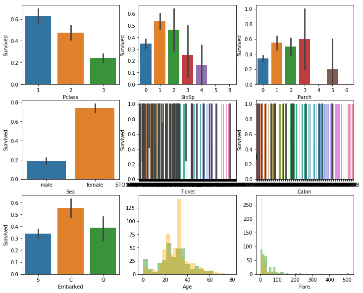
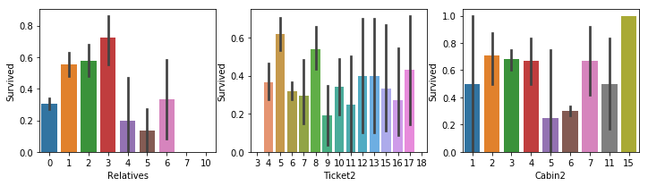

kaggle泰坦尼克号竞赛思路及9种预测模型的代码详解¶
代码参考 https://www.kaggle.com/code/goldens/titanic-on-the-top-with-a-simple-model
整体思路¶
Steps:¶
- 1- Preprocessing and exploring
- 1.1- Imports
- 1.2- Types
- 1.3 - Missing Values
- 1.4 - Exploring
- 1.5 - Feature Engineering
- 1.6 - Prepare for models
- 2- Nested Cross Validation
- 3- Submission
1- Preprocessing and exploring¶
1.1 - Imports¶
#导入必要的库
import pandas as pd
import matplotlib.pyplot as plt
import seaborn as sns
import numpy as np
from sklearn.model_selection import cross_val_score
from sklearn.ensemble import RandomForestClassifier
from sklearn.svm import SVC, LinearSVC
from sklearn.tree import DecisionTreeClassifier
from sklearn.neighbors import KNeighborsClassifier
from sklearn.linear_model import LogisticRegression, Perceptron, SGDClassifier
from sklearn.naive_bayes import GaussianNB
from sklearn.preprocessing import StandardScaler
from sklearn.pipeline import make_pipeline
from sklearn.model_selection import GridSearchCV
import warnings
# * pandas: 用于数据处理和分析
# * matplotlib.pyplot: 用于绘制图表
# * seaborn: 用于绘制图表，与matplotlib.pyplot类似，但更高级
# * numpy: 用于数值计算
# * sklearn: 用于机器学习模型训练和评估
# * warnings: 用于忽略警告
train=pd.read_csv("input/train.csv")#读取训练数据
test=pd.read_csv("input/test.csv")#读取测试数据
test2=pd.read_csv("input/test.csv")#读取测试数据
titanic=pd.concat([train, test], sort=False)#将训练数据和测试数据合并
len_train=train.shape[0]#训练数据的长度
1.2 - Types¶
PassengerId int64
Pclass int64
SibSp int64
Parch int64
Survived float64
Age float64
Fare float64
Name object
Sex object
Ticket object
Cabin object
Embarked object
dtype: object
- PassengerId: 乘客ID
- Pclass: 乘客等级
- SibSp: 兄弟姐妹数量
- Parch: 父母子女数量
- Survived: 是否幸存
- Age: 年龄
- Fare: 票价
- Name: 姓名
- Sex: 性别
- Ticket: 票号
- Cabin: 舱位
- Embarked: 登船港口
| Survived | Age | Fare | |
|---|---|---|---|
| 0 | 0.0 | 22.0 | 7.2500 |
| 1 | 1.0 | 38.0 | 71.2833 |
| 2 | 1.0 | 26.0 | 7.9250 |
| 3 | 1.0 | 35.0 | 53.1000 |
| 4 | 0.0 | 35.0 | 8.0500 |
1.2 - Missing values¶
Survived 418
Age 263
Fare 1
Cabin 1014
Embarked 2
dtype: int64
Fare¶
train.Fare=train.Fare.fillna(train.Fare.mean())#缺失票价用平均票价补上
test.Fare=test.Fare.fillna(train.Fare.mean())
Cabin¶
Embarked¶
train.Embarked=train.Embarked.fillna(train.Embarked.mode()[0])#缺失出发港口用众数补上
test.Embarked=test.Embarked.fillna(train.Embarked.mode()[0])
Age¶
Considering title Inspired on: https://medium.com/i-like-big-data-and-i-cannot-lie/how-i-scored-in-the-top-9-of-kaggles-titanic-machine-learning-challenge-243b5f45c8e9
使用 lambda 匿名函数处理 Name 列： 1. split('.')：按点号分割，取点号前的部分 2. split(',')：按逗号分割，取逗号后的部分 3. strip()：去除首尾多余空格 结果示例："Braund, Mr. Owen Harris" -> "Mr"
train['title']=train.Name.apply(lambda x: x.split('.')[0].split(',')[1].strip())
test['title']=test.Name.apply(lambda x: x.split('.')[0].split(',')[1].strip())
# 定义头衔映射字典，将众多的稀有头衔归类为几个主要类别（减少特征维度）
newtitles={
"Capt": "Officer",
"Col": "Officer",
"Major": "Officer",
"Jonkheer": "Royalty",
"Don": "Royalty",
"Sir" : "Royalty",
"Dr": "Officer",
"Rev": "Officer",
"the Countess":"Royalty",
"Dona": "Royalty",
"Mme": "Mrs",
"Mlle": "Miss",
"Ms": "Mrs",
"Mr" : "Mr",
"Mrs" : "Mrs",
"Miss" : "Miss",
"Master" : "Master",
"Lady" : "Royalty"}
# 使用 map 函数根据字典进行替换
train['title']=train.title.map(newtitles)
test['title']=test.title.map(newtitles)
title Sex
Master male 4.574167
Miss female 21.804054
Mr male 32.368090
Mrs female 35.718182
Officer female 49.000000
male 46.562500
Royalty female 40.500000
male 42.333333
Name: Age, dtype: float64
# 定义填充函数
def newage (cols):
title=cols[0]
Sex=cols[1]
Age=cols[2]
# 如果年龄是缺失值 (NaN)
if pd.isnull(Age):
# 根据不同的头衔和性别组合，返回对应的平均年龄
if title == 'Master' and Sex == "male":
return 4.57 # 小男孩通常很小
elif title == 'Miss' and Sex == 'female':
return 21.8 # 未婚女性通常较年轻
elif title == 'Mr' and Sex == 'male':
return 32.37 # 成年男性
elif title == 'Mrs' and Sex == 'female':
return 35.72 # 已婚女性
elif title == 'Officer' and Sex == 'female':
return 49 # 女性官员
elif title == 'Officer' and Sex == 'male':
return 46.56 # 男性官员
elif title == 'Royalty' and Sex == 'female':
return 40.50 # 女性贵族
else:
return 42.33 # 其他情况（如男性贵族等）的默认值
else:
# 如果年龄不缺失，直接返回原始年龄
return Age
train.Age=train[['title','Sex','Age']].apply(newage, axis=1)
test.Age=test[['title','Sex','Age']].apply(newage, axis=1)
1.3 - Exploring¶
warnings.filterwarnings(action="ignore") # 忽略绘图时的警告
plt.figure(figsize=[12,10]) # 设置大画布尺寸
# --- 第一行：社会与家庭特征 ---
plt.subplot(3,3,1)
sns.barplot('Pclass','Survived',data=train) # 船舱等级：1等舱生存率明显更高
plt.subplot(3,3,2)
sns.barplot('SibSp','Survived',data=train) # 兄弟姐妹/配偶数：1-2人时生存率较高
plt.subplot(3,3,3)
sns.barplot('Parch','Survived',data=train) # 父母/子女数
# --- 第二行：身份与票据特征 ---
plt.subplot(3,3,4)
sns.barplot('Sex','Survived',data=train) # 性别：女性生存率远高于男性 ("Lady First")
plt.subplot(3,3,5)
sns.barplot('Ticket','Survived',data=train) # 票号（若未处理，此图会非常乱）
plt.subplot(3,3,6)
sns.barplot('Cabin','Survived',data=train) # 船舱号
# --- 第三行：登船港口与数值分布 ---
plt.subplot(3,3,7)
sns.barplot('Embarked','Survived',data=train) # 登船港口：C港生存率通常最高
# 重点：年龄分布图 (直方图)
plt.subplot(3,3,8)
# 绿色代表生存者，橙色代表遇难者。观察两组在不同年龄段的重叠情况
sns.distplot(train[train.Survived==1].Age, color='green', kde=False)
sns.distplot(train[train.Survived==0].Age, color='orange', kde=False)
# 重点：票价分布图
plt.subplot(3,3,9)
# 观察票价高低对生存的影响。通常高票价（右侧）绿色占比更高
sns.distplot(train[train.Survived==1].Fare, color='green', kde=False)
sns.distplot(train[train.Survived==0].Fare, color='orange', kde=False)
<matplotlib.axes._subplots.AxesSubplot at 0x78b1d7b84550>

这些柱子上的黑线在统计学图表中被称为 误差线（Error Bars），代表不确定性，虽然柱子的高度是平均值，但真实的情况在这个范围内波动都是合理的。
我们可以把这 9 张图分为三类来看：
1. 决定生死的关键因素¶
-
Pclass (舱位): 1 等舱生还率最高（超过 60%），3 等舱最低。
-
Sex (性别): 极其明显。女性生还率接近 80%，而男性不到 20%。落实了“女士优先”原则。
-
Fare (票价): 右下角的图显示，低票价区（左侧橙色峰值）遇难人数极多；票价越高，绿色的比例相对越高。
2. 家庭关系的影响¶
-
SibSp (兄弟姐妹/配偶) & Parch (父母/子女):
-
独自一人（0）或大家庭（5个以上）的生还率都偏低。
-
带着 1-2 个家属的人生还率最高，可能是因为既有人照应，又不至于因为人太多被拖累。
3. 视觉上的“失败”尝试（需要进一步处理）¶
- Ticket (船票号) & Cabin (船舱号):
- 因为船票和船舱号的种类太多（属于高基数特征），直接画条形图会导致标签堆叠在一起。在实际操作中，我们需要对它们进行“特征工程”（例如只提取船舱的首字母 A/B/C）。
4. 年龄的规律¶
-
在极小的年龄段（左侧），绿色直方图高于橙色，说明小孩获救率高。
-
20-40 岁之间是遇难人数和比例最多的群体。
1.4 Feature Engineering¶
这段代码是在做机器学习中非常关键的一步：特征工程（Feature Engineering）。
简单来说，原始数据里的某些列（比如姓名、船票号）对电脑来说太乱了，直接丢给模型它看不懂。这段代码的目的是从混乱的原始信息中提炼出更有规律、模型更容易理解的新指标。
#合并家庭成员直接计算家庭总人数
train['Relatives']=train.SibSp+train.Parch
test['Relatives']=test.SibSp+test.Parch
#计算船票号码（Ticket）和船舱号（Cabin）的字符串长度。
#Ticket：不同的船票编号格式可能代表不同的购票渠道、等级或批次。长度一致的船票往往属于同一类人。
#Cabin：船舱号包含字母和数字。（比如长度为 0 可能代表缺失值，较长的可能代表多室套房）。
train['Ticket2']=train.Ticket.apply(lambda x : len(x))
test['Ticket2']=test.Ticket.apply(lambda x : len(x))
train['Cabin2']=train.Cabin.apply(lambda x : len(x))
test['Cabin2']=test.Cabin.apply(lambda x : len(x))
#泰坦尼克号的姓名格式通常是 Braund, Mr. Owen Harris。
#这段代码通过逗号分割，取第一个元素，也就是提取出了乘客的姓氏（Surname）
#寻找家族联系：在海难中，家庭成员往往是一起行动的。
#通过姓氏，模型可以尝试把属于同一个家族的人关联起来。
#如果这个姓氏下的其他人都获救了，那么这个人的获救概率可能也更高。
train['Name2']=train.Name.apply(lambda x: x.split(',')[0].strip())
test['Name2']=test.Name.apply(lambda x: x.split(',')[0].strip())
warnings.filterwarnings(action="ignore")
plt.figure(figsize=[12,10])
plt.subplot(3,3,1)
sns.barplot('Relatives','Survived',data=train)
plt.subplot(3,3,2)
sns.barplot('Ticket2','Survived',data=train)
plt.subplot(3,3,3)
sns.barplot('Cabin2','Survived',data=train)

1.4 - Prepare for model¶
#droping features I won't use in model
#train.drop(['PassengerId','Name','Ticket','SibSp','Parch','Ticket','Cabin']
train.drop(['PassengerId','Name','Ticket','SibSp','Parch','Ticket','Cabin'],axis=1,inplace=True)
test.drop(['PassengerId','Name','Ticket','SibSp','Parch','Ticket','Cabin'],axis=1,inplace=True)
drop 操作可以提升模型的泛化能力和降低计算复杂度。
PassengerId, Name：这些字段对每个乘客来说几乎都是唯一的，没有参考价值。
SibSp, Parch： 我们已经创建了一个名为 Relatives 的新特征。
Cabin，Ticket：船票和船舱号的原始种类太多，已经创建了新的Cabin2和Ticket2
假设我们有一个简单的乘客数据集：
import pandas as pd
df = pd.DataFrame({
'Sex': ['male', 'female', 'female'],
'Embarked': ['S', 'C', 'S']
})
常规转换直接运行 pd.get_dummies(df)，结果如下：
| Sex_female | Sex_male | Embarked_C | Embarked_S |
|---|---|---|---|
| 0 | 1 | 0 | 1 |
| 1 | 0 | 1 | 0 |
| 1 | 0 | 0 | 1 |
# Lets change type of target
train.Survived=train.Survived.astype('int')
#将 Survived（生存标签）这一列的数据类型强制转换为整型 (int)。
train.Survived.dtype
#在合并和处理过程中，Survived 有可能被自动转换成了浮点型 (float，如 1.0, 0.0)。
2 - Nested Cross Validation¶
Random Forest¶
RF=RandomForestClassifier(random_state=1)#创建一个随机森林分类器。
#参数 random_state=1：固定“随机种子”,确保每次运行代码时得到的结果完全一致
PRF=[{'n_estimators':[10,100],'max_depth':[3,6],'criterion':['gini','entropy']}]
#动作：列出你想让模型尝试的各种“配置选项”（超参数）。
# n_estimators：森林中树的数量（10棵或100棵）。
# max_depth：树的最大深度（3层或6层），用于防止过拟合。
# criterion：衡量分类质量的标准（基尼系数或信息熵）
GSRF=GridSearchCV(estimator=RF, param_grid=PRF, scoring='accuracy',cv=2)
#它会把上面的 8 种组合逐一训练，并使用 2折交叉验证 (cv=2) 来评估哪组参数最强。
scores_rf=cross_val_score(GSRF,xtrain,ytrain,scoring='accuracy',cv=5)
# 原理：
# 它将 xtrain 分成 5 份（cv=5）。
# 每次取出 4 份交给 GSRF 去寻找最佳参数。
# 用剩下的 1 份来测试这个“选出的最佳模型”的效果。
# 目的：评估模型的泛化能力。它告诉你在不同的小数据集上，你的调参方法是否都能稳定地获得高准确率。
因为设置了 cv=5，所以 scores_rf 实际上是一个包含 5个不同准确率数值 的列表（数组）。np.mean(scores_rf)求出测试的平均值
SVM¶
svc=make_pipeline(StandardScaler(),SVC(random_state=1))#SVM 的目标是找到一个最优超平面来分割数据
#StandardScaler 将数据转化为均值为 0、方差为 1 的分布，确保每个特征在计算距离时权重平等。
r=[0.0001,0.001,0.1,1,10,50,100]
PSVM=[{'svc__C':r, 'svc__kernel':['linear']},
{'svc__C':r, 'svc__gamma':r, 'svc__kernel':['rbf']}]
这里测试了 SVM 两种最常用的形态：
-
线性核 (linear)：尝试用直线（或超平面）直接分割数据。只需调参数 C。
-
RBF 核 (rbf)：也叫高斯核。它将数据映射到高维空间，用来处理非线性分类问题。需要同时调 C 和 gamma。
-
C (惩罚系数)：对错误分类的忍受度。C 越大，模型越不准出错，容易过拟合。
-
gamma：决定了单个训练样本的影响范围。gamma 越大，超平面越倾向于弯曲以拟合每一个点。
-
GSSVM=GridSearchCV(estimator=svc, param_grid=PSVM, scoring='accuracy', cv=2)
scores_svm=cross_val_score(GSSVM, xtrain.astype(float), ytrain,scoring='accuracy', cv=5)
-
GridSearchCV：在内部进行 2 折交叉验证，为 SVM 寻找上述参数的最优组合。
-
cross_val_score：在外部进行 5 折交叉验证。
-
数据类型转换：xtrain.astype(float) 是为了确保数据都是浮点数，因为 StandardScaler 涉及到除法和减法运算，浮点数可以避免精度丢失或报错。
0.8439879324218461
Decision Tree (DTree)¶
决策树：通过递归划分特征空间进行分类，无需标准化。
# 决策树分类器，基于信息增益或基尼不纯度进行分裂
DTree = DecisionTreeClassifier(random_state=1)
# 超参数网格：树深度、分裂准则、叶节点最小样本数
PDTree = [{'max_depth': [3, 6, 10, None], 'criterion': ['gini', 'entropy'], 'min_samples_leaf': [1, 2, 4]}]
GSDTree = GridSearchCV(estimator=DTree, param_grid=PDTree, scoring='accuracy', cv=2)
# 外层 5 折交叉验证，评估决策树在嵌套 CV 下的泛化准确率
scores_dtree = cross_val_score(GSDTree, xtrain, ytrain, scoring='accuracy', cv=5)
0.8215848572959589
K-Nearest Neighbors (KNN)¶
K 近邻：根据最近 K 个样本的多数类别投票分类，需标准化以保证距离度量合理。
# K 近邻分类器，配合 StandardScaler 标准化（距离类模型必须标准化）
knn = make_pipeline(StandardScaler(), KNeighborsClassifier())
# 超参数：近邻数 n_neighbors、权重 weights、距离度量 p（1=曼哈顿，2=欧氏）
PKNN = [{'kneighborsclassifier__n_neighbors': [3, 5, 7, 11, 15], 'kneighborsclassifier__weights': ['uniform', 'distance'], 'kneighborsclassifier__p': [1, 2]}]
GSKNN = GridSearchCV(estimator=knn, param_grid=PKNN, scoring='accuracy', cv=2)
scores_knn = cross_val_score(GSKNN, xtrain.astype(float), ytrain, scoring='accuracy', cv=5)
0.7564844436831576
Logistic Regression (LR)¶
逻辑回归：线性模型+ sigmoid，输出概率，需标准化以稳定收敛。
# 逻辑回归，配合 StandardScaler
lr = make_pipeline(StandardScaler(), LogisticRegression(random_state=1, max_iter=1000))
# 超参数：正则化强度 C、求解器 solver
PLR = [{'logisticregression__C': [0.01, 0.1, 1.0, 10.0], 'logisticregression__solver': ['lbfgs', 'liblinear']}]
GSLR = GridSearchCV(estimator=lr, param_grid=PLR, scoring='accuracy', cv=2)
scores_lr = cross_val_score(GSLR, xtrain.astype(float), ytrain, scoring='accuracy', cv=5)
0.8126213433851565
Linear SVC (L-SVC)¶
线性支持向量分类：用线性核的 SVM，适合线性可分或近似线性可分数据，需标准化。
# 线性 SVC，配合 StandardScaler；dual=False 适用于 n_samples > n_features
lsvc = make_pipeline(StandardScaler(), LinearSVC(random_state=1, max_iter=5000, dual=False))
# 超参数：正则化 C
PLSVC = [{'linearsvc__C': [0.01, 0.1, 1.0, 10.0]}]
GSLSVC = GridSearchCV(estimator=lsvc, param_grid=PLSVC, scoring='accuracy', cv=2)
scores_lsvc = cross_val_score(GSLSVC, xtrain.astype(float), ytrain, scoring='accuracy', cv=5)
Perceptron¶
感知机：单层线性分类器，适合线性可分问题，需标准化。
# 感知机分类器，配合 StandardScaler
perceptron = make_pipeline(StandardScaler(), Perceptron(random_state=1, max_iter=1000))
# 超参数：惩罚 alpha、学习率 eta0
PPerceptron = [{'perceptron__alpha': [0.0001, 0.001, 0.01], 'perceptron__eta0': [0.01, 0.1, 1.0]}]
GSPerceptron = GridSearchCV(estimator=perceptron, param_grid=PPerceptron, scoring='accuracy', cv=2)
scores_perceptron = cross_val_score(GSPerceptron, xtrain.astype(float), ytrain, scoring='accuracy', cv=5)
Naive Bayes (NB)¶
朴素贝叶斯：基于条件独立假设与先验的类别概率，对特征尺度不敏感，一般不需标准化。
0.8002488840469157
# 高斯朴素贝叶斯，假设每类特征服从高斯分布
nb = GaussianNB()
# 超参数：var_smoothing 用于数值稳定性，避免方差为 0
PNB = [{'var_smoothing': [1e-9, 1e-8, 1e-7, 1e-6]}]
GSNB = GridSearchCV(estimator=nb, param_grid=PNB, scoring='accuracy', cv=2)
scores_nb = cross_val_score(GSNB, xtrain, ytrain, scoring='accuracy', cv=5)
0.478105261142065
SGD Classifier (SGD)¶
随机梯度下降分类器：线性模型，支持多种损失（如 hinge、log），需标准化且对超参数敏感。
# SGD 分类器，配合 StandardScaler；对学习率和迭代次数较敏感
sgd = make_pipeline(StandardScaler(), SGDClassifier(random_state=1, max_iter=2000, tol=1e-3))
# 超参数：损失函数 loss（旧版 sklearn 用 'log'，新版为 'log_loss'）、惩罚 penalty、正则化强度 alpha
PSGD = [{'sgdclassifier__loss': ['hinge', 'log'], 'sgdclassifier__penalty': ['l2', 'l1'], 'sgdclassifier__alpha': [1e-4, 1e-3, 1e-2]}]
GSSGD = GridSearchCV(estimator=sgd, param_grid=PSGD, scoring='accuracy', cv=2)
scores_sgd = cross_val_score(GSSGD, xtrain.astype(float), ytrain, scoring='accuracy', cv=5)
0.8193316019968885
Nested CV 各模型得分汇总¶
下方为各模型在 5 折外层交叉验证下的平均准确率对比。
# 汇总各模型 Nested CV 平均准确率（按得分从高到低）
results = [
('DTree', np.mean(scores_dtree)), ('RF', np.mean(scores_rf)), ('KNN', np.mean(scores_knn)),
('SVM', np.mean(scores_svm)), ('LR', np.mean(scores_lr)), ('L-SVC', np.mean(scores_lsvc)),
('Perceptron', np.mean(scores_perceptron)), ('NB', np.mean(scores_nb)), ('SGD', np.mean(scores_sgd))
]
for name, acc in sorted(results, key=lambda x: -x[1]):
print(f'{name:12s} => {acc*100:.2f}%')
SVM => 84.40%
L-SVC => 83.05%
DTree => 82.16%
SGD => 81.93%
LR => 81.26%
Perceptron => 80.02%
RF => 78.66%
KNN => 75.65%
NB => 47.81%
3 - Submission¶
output.to_csv('submission.csv', index=False)
#将这个表格保存为名为 submission.csv 的本地文件
#到这一步，就可以拿着这个 submission.csv 去提交的泰坦尼克号生存预测成绩了
- 最终结果